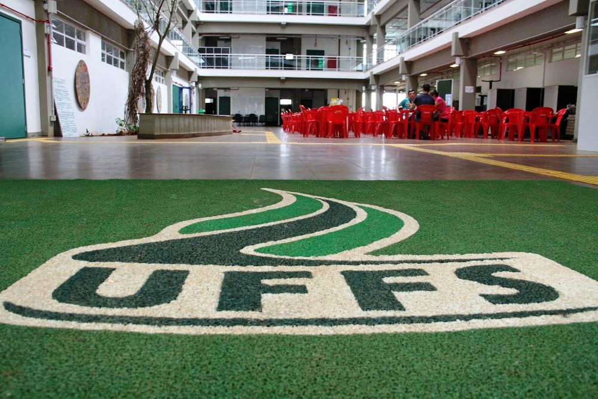

Educação é o ato de educar, de instruir, é polidez, disciplinamento. No seu sentido mais amplo, educação significa o meio em que os hábitos, costumes e valores de uma comunidade são transferidos de uma geração para a geração seguinte. segundo o Ex presidente da africa do sul, Nelson mandela: "A educação é a arma mais poderosa para mudar o mundo"
Fiz os meus estudos clasicos em uma esola privada mas, funciona como publica. foi uma escola de graça.
"Escola de lÁmitié SODEC" depois de 13 anos estudando naquela escola, eu fui fazer a continuidade do estudo em um colegio privado presbiteral onde terminei o meu Ensino Médio.
En 2021 fiz um participei no concurso da UFFS(Universidade federal da fronteira sul) consegui entrar na Faculdade para fazer o curso do meu sonho "Ci~encia da computação" na UFFS me sento confortavél não somente porque é uma universidade federal que é de graça. Mas também a UFFS faz parte das melhores univsersidades do pais e ate da america do sul em geral. com uma equipw de profesores qualificados. estou lutando para que esse sonho seja realizada.
